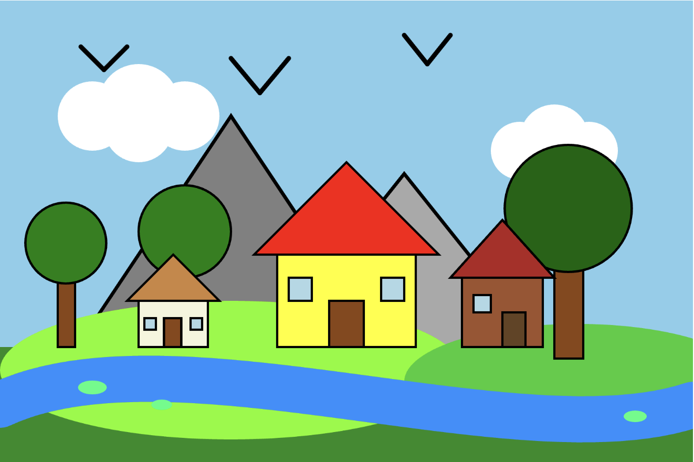
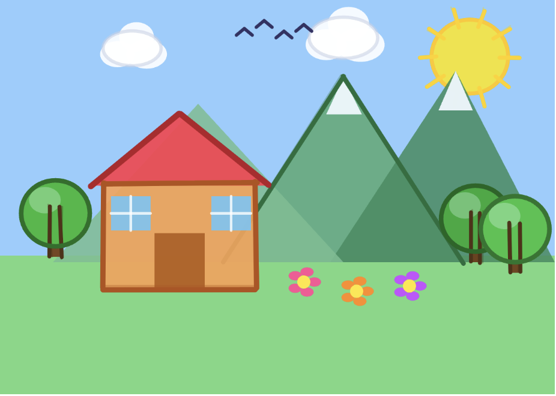
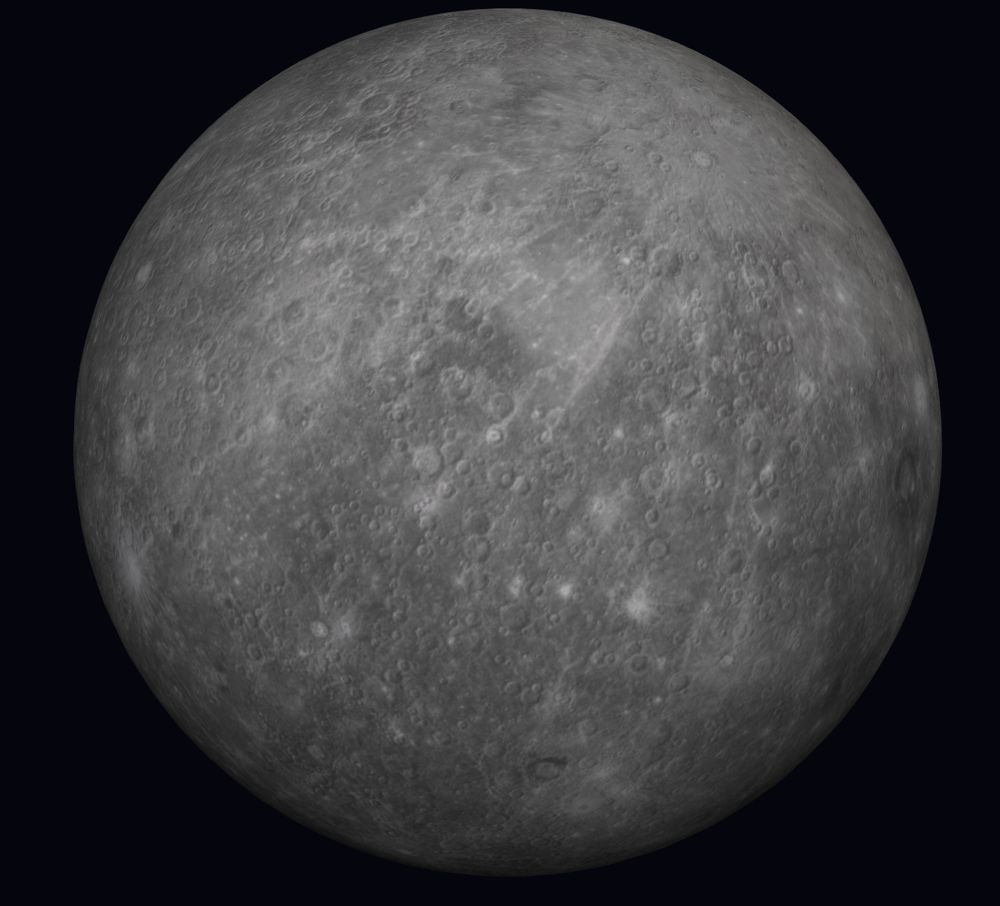
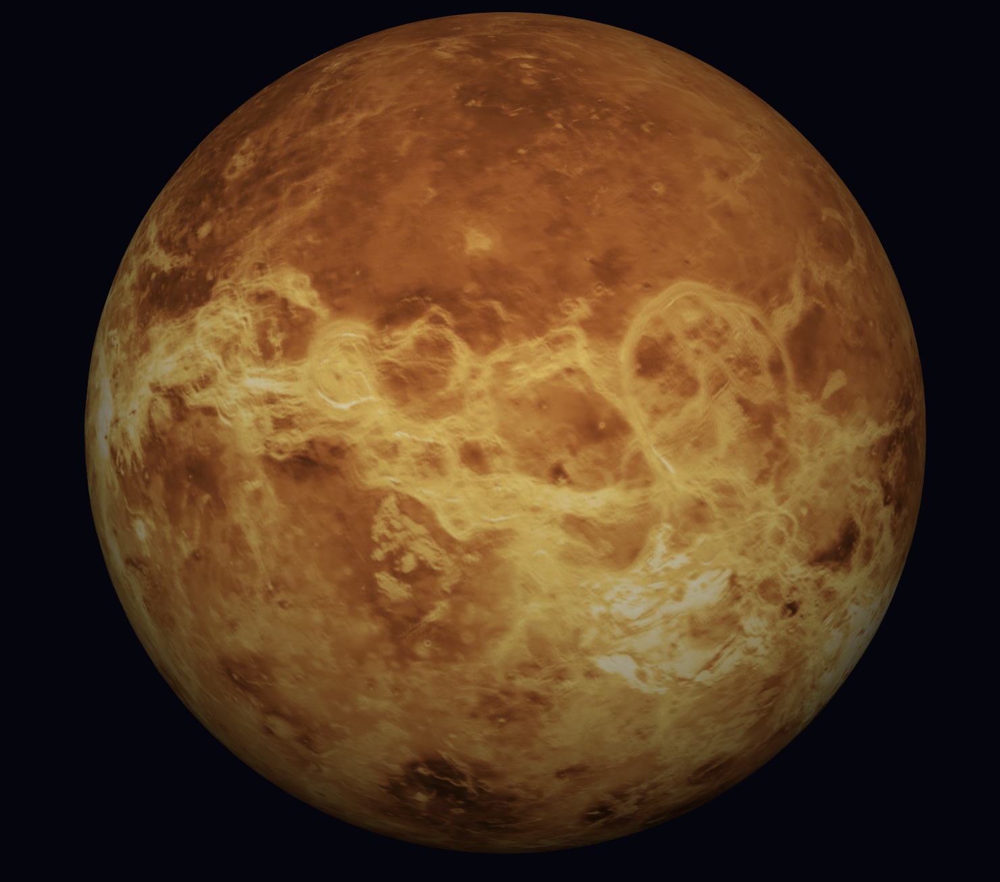
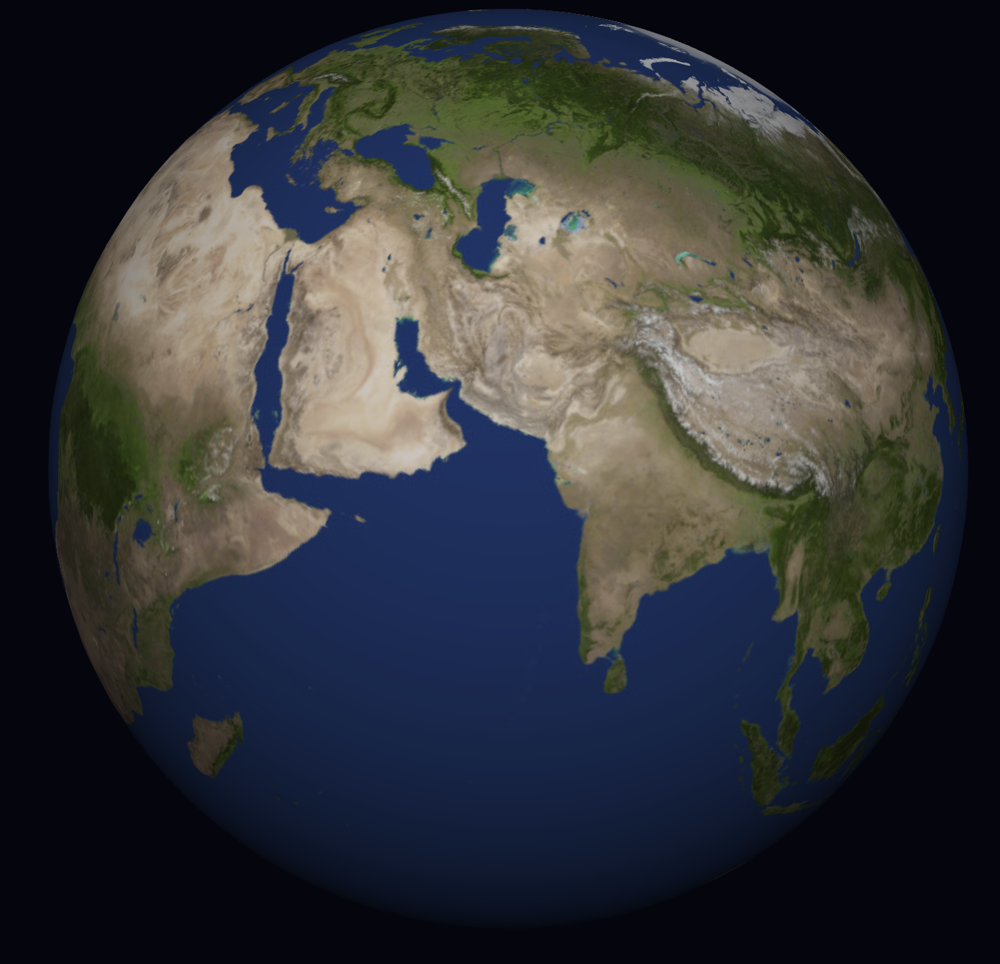
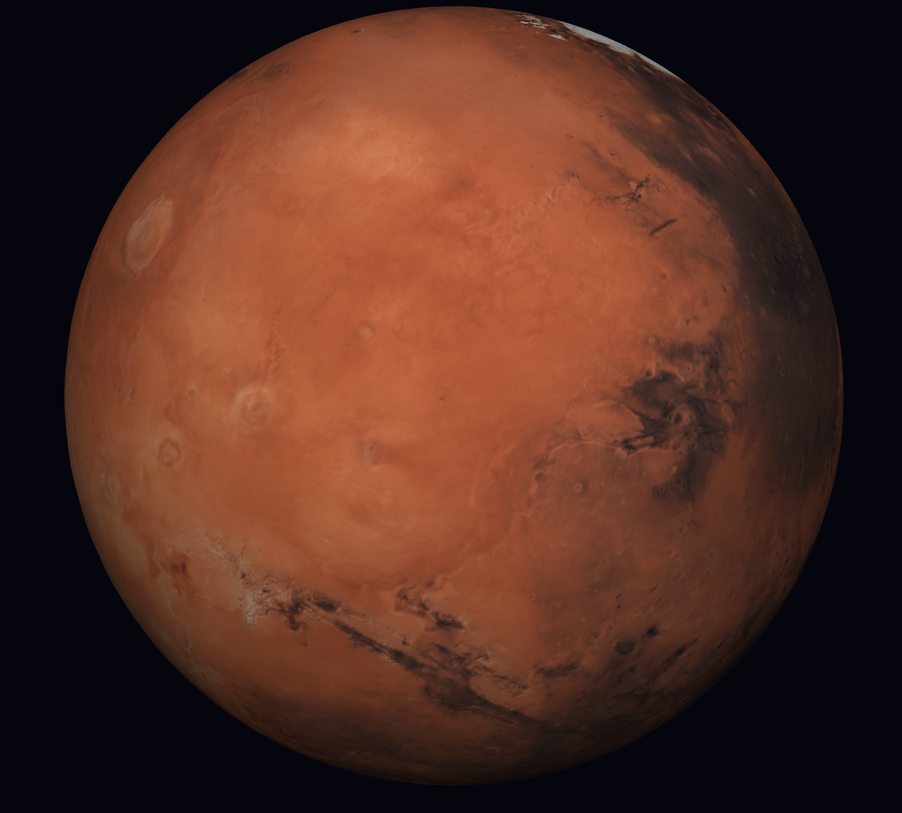
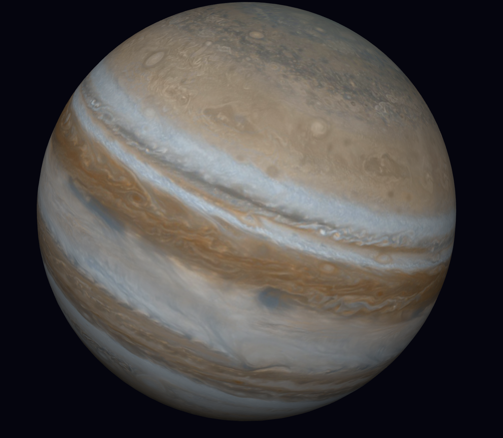
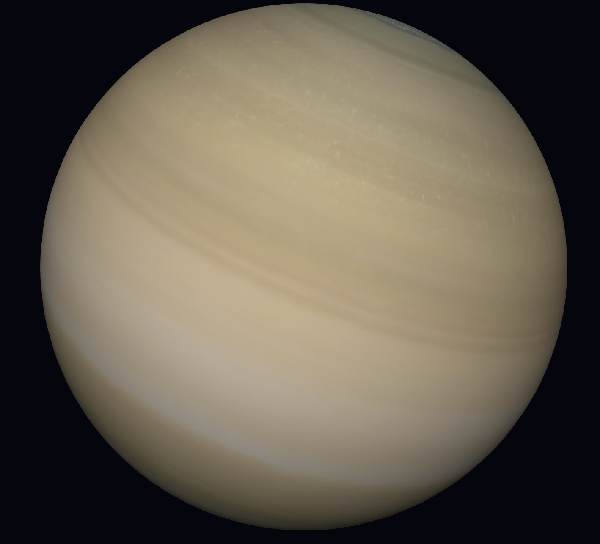
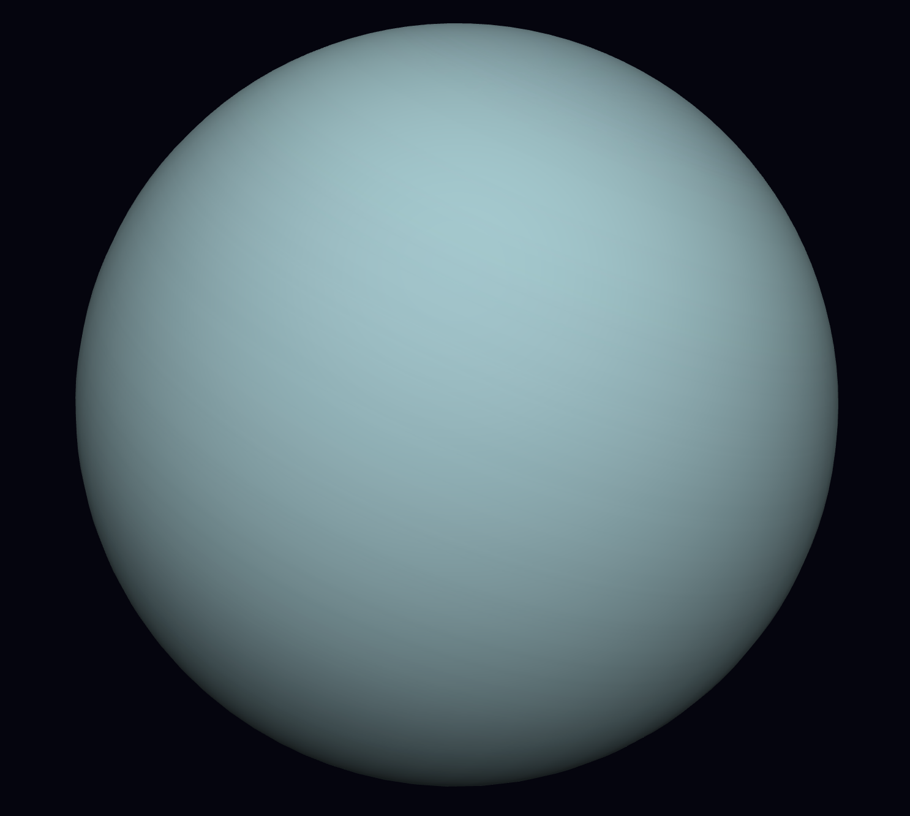
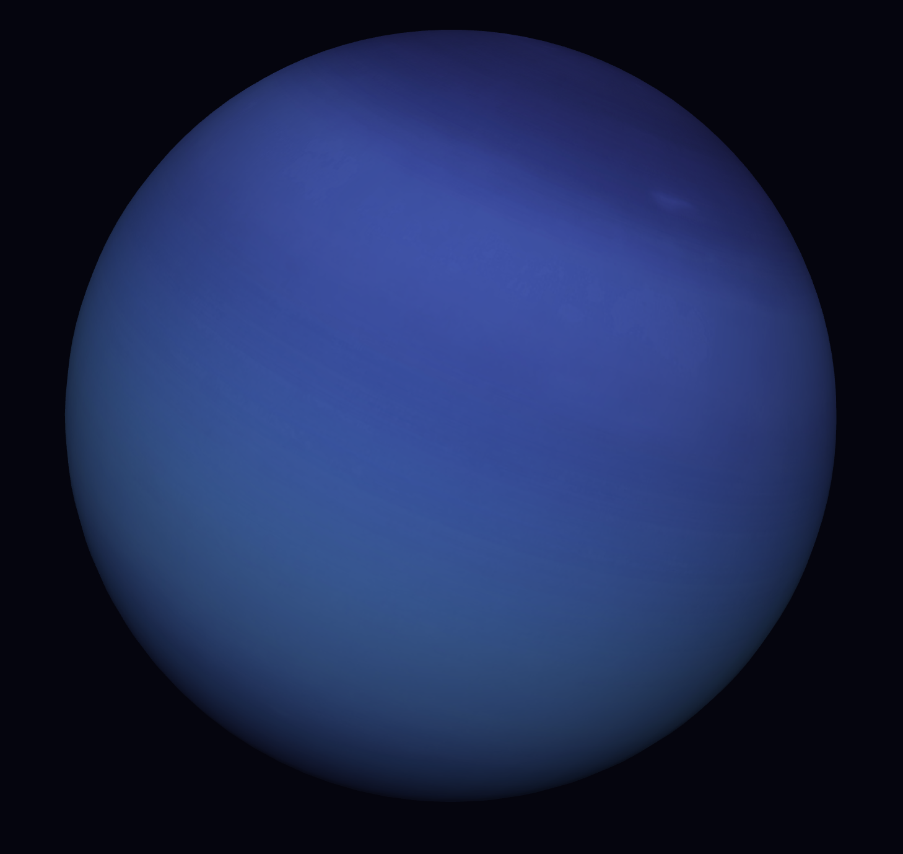

As a child I used to sketch a lot of villages, sceneries and all, I have tried to recreate those childhood memories using p5.js
function setup() {
createCanvas(600, 400);
noLoop();
}
function draw() {
// Background - Sky
background(135, 206, 235);
// Clouds
noStroke();
fill(255);
circle(80, 100, 60);
circle(120, 90, 70);
circle(160, 100, 60);
circle(120, 110, 60);
circle(450, 130, 50);
circle(480, 120, 60);
circle(510, 130, 50);
// Mountains
stroke(0);
strokeWeight(3);
fill(169, 169, 169);
triangle(150, 400, 350, 150, 550, 400);
fill(128, 128, 128);
triangle(0, 400, 200, 100, 400, 400);
// Ground & Hills
noStroke();
fill(34, 139, 34);
rect(0, 300, 600, 100);
fill(124, 252, 0);
ellipse(200, 320, 400, 120);
fill(50, 205, 50);
ellipse(500, 330, 300, 100);
// River
stroke(30, 144, 255);
strokeWeight(40);
noFill();
bezier(0, 350, 150, 280, 450, 400, 600, 350);
stroke(0);
strokeWeight(2);
// Trees
fill(139, 69, 19);
rect(50, 240, 15, 60);
rect(150, 230, 20, 70);
rect(480, 210, 25, 100);
fill(0, 128, 0);
circle(57, 210, 70);
circle(160, 200, 80);
fill(0, 100, 0);
circle(492, 180, 110);
// Houses
fill(255, 255, 0);
rect(240, 220, 120, 80);
fill(255, 0, 0);
triangle(220, 220, 300, 140, 380, 220);
fill(139, 69, 19);
rect(285, 260, 30, 40);
fill(173, 216, 230);
rect(250, 240, 20, 20);
rect(330, 240, 20, 20);
fill(160, 82, 45);
rect(400, 240, 70, 60);
fill(178, 34, 34);
triangle(390, 240, 435, 190, 480, 240);
fill(101, 67, 33);
rect(435, 270, 20, 30);
fill(173, 216, 230);
rect(410, 255, 15, 15);
fill(245, 245, 220);
rect(120, 260, 60, 40);
fill(205, 133, 63);
triangle(110, 260, 150, 220, 190, 260);
fill(139, 69, 19);
rect(142, 275, 15, 25);
fill(173, 216, 230);
rect(125, 275, 10, 10);
rect(165, 275, 10, 10);
// Birds
noFill();
strokeWeight(4);
stroke(0);
line(70, 40, 90, 60);
line(90, 60, 110, 40);
line(200, 50, 225, 80);
line(225, 80, 250, 50);
line(350, 30, 370, 55);
line(370, 55, 390, 30);
// Lily Pads
noStroke();
fill(0, 255, 127);
ellipse(80, 335, 25, 12);
ellipse(140, 350, 18, 9);
ellipse(550, 360, 20, 10);
}
function setup() {
createCanvas(420, 300);
noLoop();
}
function markerStroke(x1,y1,x2,y2,col,sw=5) {
stroke(col); strokeWeight(sw);
line(x1+random(-1,1), y1+random(-1,1), x2+random(-1,1), y2+random(-1,1));
strokeWeight(sw*0.4);
stroke(red(col), green(col), blue(col), 80);
line(x1+random(-2,2), y1+random(-2,2), x2+random(-2,2), y2+random(-2,2));
}
function draw() {
background(255, 255, 250);
// Sky
noStroke(); fill(100, 185, 255, 180);
rect(0, 0, 420, 195);
// Ground
fill(60, 200, 80, 180);
rect(0, 195, 420, 105);
// Sun
fill(255, 230, 0, 220); stroke(255, 200, 0); strokeWeight(3);
ellipse(355+random(-1,1), 45+random(-1,1), 58, 56);
for (let a=0; a<TWO_PI; a+=PI/5) {
markerStroke(355+24*cos(a), 45+24*sin(a), 355+38*cos(a), 45+38*sin(a), color(255,210,0), 3);
}
// Mountains
noStroke();
fill(80, 170, 120, 230); triangle(170, 200, 260, 60, 350, 200);
fill(50, 140, 95, 220); triangle(250, 200, 345, 55, 420, 200);
fill(110, 190, 145, 220); triangle(40, 200, 150, 80, 260, 200);
fill(240, 248, 255, 240);
triangle(260, 60, 247, 88, 274, 88);
triangle(345, 55, 332, 85, 358, 85);
// Mountain outlines
markerStroke(170,200,260,60,color(30,110,60),3.5);
markerStroke(260,60,350,200,color(30,110,60),3.5);
// House
noStroke(); fill(255, 160, 80, 230);
rect(78, 140, 116, 80);
fill(255, 60, 80, 240);
triangle(68, 142, 136, 88, 204, 142);
fill(180, 90, 20, 230);
rect(117, 178, 38, 42);
fill(100, 200, 255, 220);
rect(84, 150, 30, 26);
rect(160, 150, 30, 26);
stroke(255,255,255,200); strokeWeight(2);
line(99,150,99,176); line(84,163,114,163);
line(175,150,175,176); line(160,163,190,163);
// House outlines
markerStroke(78,140,194,140,color(180,80,20),4);
markerStroke(194,140,194,220,color(180,80,20),4);
markerStroke(194,220,78,220,color(180,80,20),4);
markerStroke(78,220,78,140,color(180,80,20),4);
markerStroke(68,142,136,88,color(180,30,40),4.5);
markerStroke(136,88,204,142,color(180,30,40),4.5);
// Trees
function mTree(tx, ty, col1, col2) {
noStroke(); fill(col2);
rect(tx-4, ty, 8, 38);
fill(col1);
ellipse(tx, ty+5, 52, 50);
fill(lerpColor(color(col1), color(255,255,255), 0.3));
ellipse(tx-8, ty-5, 24, 20);
markerStroke(tx-4,ty,tx-4,ty+38,color(80,50,20),3);
markerStroke(tx+4,ty,tx+4,ty+38,color(80,50,20),3);
noFill(); stroke(red(col1)*0.6, green(col1)*0.6, blue(col1)*0.6); strokeWeight(3.5);
ellipse(tx,ty+5,52,50);
}
mTree(42, 158, color(40,185,60), color(120,70,30));
mTree(360, 162, color(30,170,55), color(110,65,25));
mTree(390, 170, color(50,195,70), color(115,68,28));
// Clouds
function mCloud(cx,cy,s) {
noStroke(); fill(255,255,255,230);
ellipse(cx,cy,s*2,s*1.2);
ellipse(cx+s*0.5,cy+s*0.2,s*1.4,s);
ellipse(cx-s*0.5,cy+s*0.2,s*1.2,s*0.9);
ellipse(cx+s*0.15,cy-s*0.4,s*1.2,s);
stroke(200,210,230,150); strokeWeight(2.5); noFill();
ellipse(cx,cy,s*2,s*1.2);
}
mCloud(100, 38, 22);
mCloud(260, 30, 26);
// Birds
stroke(50,50,100); strokeWeight(2.5); noFill();
[[185,28],[200,22],[215,30],[230,25]].forEach(b=>{
line(b[0]-6,b[1],b[0],b[1]-5);
line(b[0],b[1]-5,b[0]+6,b[1]);
});
// Flowers
function flower(fx,fy,col) {
noStroke(); fill(col);
for (let a=0;a<TWO_PI;a+=TWO_PI/5)
ellipse(fx+8*cos(a),fy+8*sin(a),10,7);
fill(255,230,50);
ellipse(fx,fy,10,10);
}
flower(230,215,color(255,80,150));
flower(270,222,color(255,140,30));
flower(310,218,color(200,80,255));
}
Made planets using p5.js and texture images from Solar System Scope, check them out at:
let PlanetX;
function preload() {
PlanetX = loadImage(window.currentPlanetPath || "assets/jupiter.jpg");
}
function setup() {
createCanvas(window.innerWidth, window.innerHeight, WEBGL);
// expose function to update texture dynamically
window.updatePlanetTexture = function (path) {
loadImage(path, (img) => {
PlanetX = img;
});
};
}
function draw() {
background(5, 5, 15);
orbitControl();
ambientLight(40);
pointLight(255, 255, 255, 300, -200, 400);
rotateZ(0.47);
// Planet
push();
noStroke();
rotateY(frameCount * 0.003);
texture(PlanetX);
sphere(100, 64, 64);
pop();
}
function windowResized() {
resizeCanvas(window.innerWidth, window.innerHeight);
}






